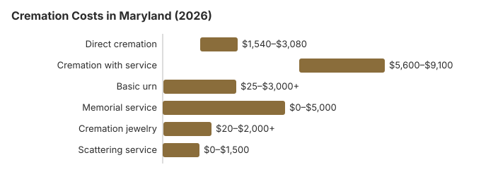

Cremation Costs in Maryland (2026)
We estimate a Maryland direct cremation at about $2,200 and a funeral with viewing followed by cremation at about $7,000. Maryland cremates about 55% of its dead, 8.4 points under NFDA's 63.4% national projection for 2025. Its 12-hour minimum wait is short, so the practical schedule depends on the authorization, identification of the body and the crematory itself; all three are covered below, with the $650 Burial Assistance rule.
Maryland Cremation Choices
Direct Cremation
- Cheapest Maryland choice
- Nothing held beforehand
- Body goes from the place of death to the crematory
- Ashes go back to the family
- Gathering can come later
Cremation with Service
- Funeral first, then the cremation
- Viewing hours can be added
- Service in a funeral home or church
- Simple urn often in the price
- Closest to a conventional funeral
Itemized Maryland Cremation Costs
| Line | Maryland estimate | Range seen |
|---|---|---|
| Direct cremation | $2,200 | $1,540 – $3,080 |
| Cremation with service | $7,000 | $5,600 – $9,100 |
| Basic urn | $50 – $300 | $25 – $3,000+ |
| Memorial service | $500 – $2,000 | $0 – $5,000 |
| Cremation jewelry | $50 – $500 | $20 – $2,000+ |
| Scattering service | $200 – $600 | $0 – $1,500 |
How the Maryland figures were built: from our cost model, not from calls to Maryland crematories. They help you judge quotes; they are not a quote or professional advice. The details are in our method with limits noted in our disclaimer.
State sources: Maryland Department of Health; COMAR 07.03.20.03; Md. Health-Gen. § 5-505.

Saving Money on a Maryland Cremation
Ways Maryland families can pay less:
- Line up Maryland General Price Lists from three providers:
- Ask about current turnaround: Maryland requires at least 12 hours between death and cremation (Md. Health-Gen. § 5-503); after that, how long it takes depends on the crematory's schedule, so get its estimate in writing.
Who Signs for a Maryland Cremation
Maryland's authorization rules in brief:
- Maryland's order for who may arrange a cremation starts with the person's own written designation, then the spouse or domestic partner, an adult child, a parent, an adult sibling and an adult grandchild (Md. Code, Health-Gen. § 5-509). Listing the domestic partner next to the spouse matters for couples who never married.
- If no relative can be reached, another willing adult may sign once the attempts to contact the family are documented, which keeps a Maryland cremation from stalling for weeks. A public official responsible for the disposition may also authorize it when no one else can.
- Ask the Maryland provider how many days after the 12-hour wait the ashes are usually ready, and whether the quoted price covers delivery or only pickup.
Crematory Turnaround in Maryland
How fast a Maryland cremation finishes depends less on the law than on the crematory: the legal wait is only 12 hours, but busy Baltimore-area crematories and smaller operators can work through very different backlogs. Ask each provider for its current turnaround alongside the $2,200 direct cremation price, since the cheapest quote is not always the quickest. Whoever runs the cremation must be a registered crematory operator: at least 18, certified by a group such as the Cremation Association of North America, and trained on that crematory's own equipment (COMAR 09.34.06.05).
Cremation Resources
- Funeral Consumers AllianceNonprofit advocacy: compare cremation providers
- Cremation Jewelry GuideMemorial keepsakes and remembrance options
- Cremation vs. Burial CostsSide-by-side cost comparison
- Pet Cremation CostsOptions and prices for pet cremation and memorials
- Final Expense InsuranceCoverage options to help pay for cremation costs
Compare Funeral Costs
- Average Funeral Cost in 2026National cost breakdown with real prices
- Cremation vs. Burial Cost ComparisonSide-by-side price comparison to help you decide
- Funeral Cost BreakdownEvery line item explained: know what you're paying for
- Cheapest Funeral OptionsLower-cost alternatives, with typical price ranges
- Direct Cremation: Most Affordable OptionNFDA 2023 median $2,645 with a family-supplied container (latest available)
- How to Compare Funeral PricesStep-by-step guide to getting the best price
Frequently Asked Questions
How much is a cremation in Maryland?
Our Maryland figures: about $2,200 for a direct cremation, which covers transport, the cremation and returning the ashes, and about $7,000 for a funeral and ceremony before the cremation.
What cremation services do Maryland providers sell?
Maryland families generally weigh three options: direct cremation at about $2,200 with no service; cremation followed by a memorial whenever and wherever the family chooses, priced between the extremes; or a viewing and funeral before cremation at about $7,000.
How soon may a Maryland cremation take place?
A Maryland cremation can happen as soon as 12 hours after death (Md. Code, Health-Gen. § 5-503), one of the shorter waits in the country, provided the next of kin has signed a written authorization. No medical examiner sign-off is needed unless that office took the case. The rules section further down has the citation and the board's number.
What can a Maryland family do with the ashes?
Ask the landowner or the agency that manages the place before scattering, and get it in writing. Many Maryland families choose a columbarium niche or urn burial instead, and Baltimore National Cemetery takes cremated remains of eligible veterans.
Why do Marylanders choose cremation?
Price is one reason: on our estimates direct cremation is about $7,000 cheaper than a traditional Maryland funeral.
What is the Maryland cremation timeline?
The Cremation Association of North America puts the cremation itself at half an hour to more than two hours, plus cooling and processing. Maryland requires at least 12 hours to pass after death (Md. Health-Gen. § 5-503), and a direct cremation at about $2,200 has no service to schedule.
Can there be a viewing before a Maryland cremation?
Yes. Many providers rent a casket for a viewing before the cremation. Allow for the 12-hour minimum and the next of kin's written authorization (Md. Health-Gen. § 5-503); no medical examiner sign-off is needed unless that office has the case.
More for Maryland
Who identifies the body before a Maryland cremation
Maryland will not allow a cremation until the body has been identified. That can be done by the next of kin, the person with legal authority to arrange the disposition, or a medical examiner. If the person with authority cannot be there to identify the body and sign, they can hand the job to someone else by electronic message. The message must give the sender's name, address and relationship to the person who died, plus the name and address of the delegate. A written authorization follows by mail, but the electronic one controls (Md. Code, Health-Gen. § 5-502; checked October 29, 2026).
- What the authorization form asks: under the Office of Cemetery Oversight's rules, the form must confirm that a pacemaker or defibrillator will be removed, and the person signing must state that no radiation implant treatment took place in the 5 days before cremation (COMAR 09.34.08.07).
- Veteran status: the form also records whether the person was a veteran or an eligible dependent.
Maryland cremation oversight and the $650 rule
The Maryland Department of Health (410-764-4792) is the licensing office for funeral homes and cremation providers. Crematories hold permits from the Office of Cemetery Oversight, or from the State Board of Morticians and Funeral Directors when a funeral-home licensee owns most of one, so confirm the permit before you sign.
Maryland is not one of the nine states the Funeral Consumers Alliance flags for restricting family-directed care, which means a family holding the permit can deal with a crematory itself. Even then, it pays to confirm the crematory's permit first; Maryland crematories are permitted by the Office of Cemetery Oversight, or by the State Board of Morticians and Funeral Directors when a funeral-home licensee owns most of it.
Cremation may not take place until at least 12 hours after death, and the legal next of kin must sign a written authorization; no medical examiner sign-off is required (Md. Health-Gen. § 5-503).
Help with the cost
Maryland's $650 Burial Assistance payment can go toward a cremation as long as the funeral cost stays at or under $2,500, and it cannot reimburse bills already paid (COMAR 07.03.20.03). (Source: COMAR 07.03.20.03.) The $255 Social Security death payment to a qualifying Maryland spouse or child would cover only part of the $2,200 direct cremation estimate above. Keep the casket off the bill too: nobody in Maryland may insist that a cremation be done in a casket, though a simple container may be required (Md. Health-Gen. § 5-505).
Nobody in Maryland may insist that a cremation be done in a casket, although a simple container may be required (Md. Health-Gen. § 5-505).
Veterans
A cremated veteran keeps the burial benefit. Baltimore National Cemetery (410-644-9696) accepts cremated remains only, and the state's Crownsville (410-987-6320) and Cheltenham (301-372-6398) veterans cemeteries take urns; see cem.va.gov.
Maryland to-do list
- Ask whether the price includes the death certificates and the permit fee.
- Plan the date around the 12-hour wait and the time to identify the body.
- If the $650 payment matters, keep the total at or under $2,500 and apply through the local department of social services before paying.
- Keep 410-764-4792 handy for licensing questions.